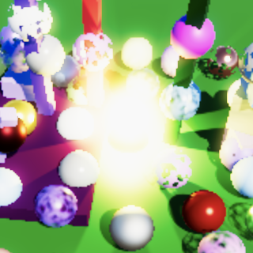
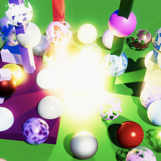

Render Scale
Scaling Up and Down
- Adjust the render scale via a slider.
- Support different render scales per camera.
- Rescale to the final target after all post FX.
This is the 16th part of a tutorial series about creating a custom scriptable render pipeline. It's about decoupling the render resolution from the target buffer size.
This tutorial is made with Unity 2019.4.16f1.
Variable Resolution
An app runs at a fixed resolution. Some apps allow the resolution to be changed via a settings menu, but this requires a complete reinitialization of the graphics. A more flexible approach is to keep the app's resolution fixed but change the size of the buffers that the camera uses for rendering. This affects the entire rendering process except the final draw to the frame buffer, at which point the result gets rescaled to match the app's resolution.
Scaling the buffer size can be used to improve performance, by reducing the amount of fragments that have to be processed. This could for example be done for all 3D rendering, while keeping the UI crisp at full resolution. The scale could also be adjusted dynamically, to keep the frame rate acceptable. Finally, we could also increase the buffer size to supersample, which lessens aliasing artifacts caused by a finite resolution. This last approach is also known as SSAA, which stands for supersampling antialiasing.
Buffer Settings
Adjusting the scale at which we render affects the buffer size, so we'll add a configurable slider for the render scale to CameraBufferSettings. There should be a minimum scale, for which we'll use 0.1. We also use 2 as a maximum, because going higher than that won't improve the image quality if we rescale with a single bilinear interpolation step. Going above 2 would worsen the quality because we'd end up skipping many pixels entirely when downsampling to the final target resolution.
using UnityEngine;
[System.Serializable]
public struct CameraBufferSettings {
…
[Range(0.1f, 2f)]
public float renderScale;
}
The default render scale should be set to 1 in CustomRenderPipelineAsset.
CameraBufferSettings cameraBuffer = new CameraBufferSettings {
allowHDR = true,
renderScale = 1f
};
Scaled Rendering
From now on we'll also keep track of whether we're using scaled rendering in CameraRenderer.
bool useHDR, useScaledRendering;
We don't want the configured render scale to affect scene windows, because they're used for editing. Enforce this by turning scaled rendering off in PrepareForSceneWindow when appropriate.
partial void PrepareForSceneWindow () {
if (camera.cameraType == CameraType.SceneView) {
ScriptableRenderContext.EmitWorldGeometryForSceneView(camera);
useScaledRendering = false;
}
}
We determine whether scaled rendering should be used before invoking PrepareForSceneWindow in Render. Keep track of the current render scale in a variable and check whether it is not 1.
float renderScale = bufferSettings.renderScale; useScaledRendering = renderScale != 1f; PrepareBuffer(); PrepareForSceneWindow();
We should be a bit more fuzzy than this though, because very slight deviations from 1 will have neither visual nor performance differences that matter. So let's only use scaled rendering if there is at least a 1% difference.
useScaledRendering = renderScale < 0.99f || renderScale > 1.01f;
From now on we also have to use an intermediate buffer when scaled rendering is used. So check for it in Setup.
useIntermediateBuffer = useScaledRendering || useColorTexture || useDepthTexture || postFXStack.IsActive;
Buffer Size
Because our camera's buffer size can now differ from the one indicated by the Camera component we have to keep track of the buffer size that we end up using. We can use a single Vector2Int field for this.
Vector2Int bufferSize;
Set the appropriate buffer size in Render, after culling succeeded. If scaled rendering applies scale the camera's pixel width and height and cast the results to integers, rounding down.
if (!Cull(shadowSettings.maxDistance)) {
return;
}
useHDR = bufferSettings.allowHDR && camera.allowHDR;
if (useScaledRendering) {
bufferSize.x = (int)(camera.pixelWidth * renderScale);
bufferSize.y = (int)(camera.pixelHeight * renderScale);
}
else {
bufferSize.x = camera.pixelWidth;
bufferSize.y = camera.pixelHeight;
}
Use this buffer size when getting render textures for the camera attachments in Setup.
buffer.GetTemporaryRT( colorAttachmentId, bufferSize.x, bufferSize.y, 0, FilterMode.Bilinear, useHDR ? RenderTextureFormat.DefaultHDR : RenderTextureFormat.Default ); buffer.GetTemporaryRT( depthAttachmentId, bufferSize.x, bufferSize.y, 32, FilterMode.Point, RenderTextureFormat.Depth );
And also for the color and depth textures, if they are needed.
void CopyAttachments () {
if (useColorTexture) {
buffer.GetTemporaryRT(
colorTextureId, bufferSize.x, bufferSize.y,
0, FilterMode.Bilinear, useHDR ?
RenderTextureFormat.DefaultHDR : RenderTextureFormat.Default
);
…
}
if (useDepthTexture) {
buffer.GetTemporaryRT(
depthTextureId, bufferSize.x, bufferSize.y,
32, FilterMode.Point, RenderTextureFormat.Depth
);
…
}
…
}
Initially try this out with without any post FX. You can zoom in the game window so you can better see individual pixels, which makes an adjusted render scale more obvious.
A reduced render scale will speed up rendering while lowering image quality. An increased render scale does the opposite. Do keep in mind that when not using post FX an adjusted render scale requires an intermediate buffer and extra draw, so this adds some extra work.
The rescaling to the target buffer size is done automatically by the final draw. We end up with a simple bilinear upscaling or downscaling operation. The only weird results involve HDR values, which appear to break interpolation. You can see this happen with the highlight on the yellow sphere in the center of the above screenshots. We'll deal with this problem later.
Fragment Screen UV
Adjusting the render scale introduces a bug: sampling the color and depth textures goes wrong. You can see this with particle distortion, which clearly ends up using incorrect screen-space UV coordinates.
This happens because the values Unity puts in _ScreenParams match the camera's pixel dimensions, not the dimensions of the buffer we are targeting. We fix this by introducing an alternative _CameraBufferSize vector that contains the data for the camera's adjusted size.
static int
bufferSizeId = Shader.PropertyToID("_CameraBufferSize"),
colorAttachmentId = Shader.PropertyToID("_CameraColorAttachment"),
We send the values to the GPU in Render, after determining the buffer size. We'll use the same format as Unity uses for _TexelSize vectors, so the inverse of the width and height followed by the width and height.
if (useScaledRendering) {
bufferSize.x = (int)(camera.pixelWidth * renderScale);
bufferSize.y = (int)(camera.pixelHeight * renderScale);
}
else {
bufferSize.x = camera.pixelWidth;
bufferSize.y = camera.pixelHeight;
}
buffer.BeginSample(SampleName);
buffer.SetGlobalVector(bufferSizeId, new Vector4(
1f / bufferSize.x, 1f / bufferSize.y,
bufferSize.x, bufferSize.y,
));
ExecuteBuffer();
Add the vector to Fragment.
TEXTURE2D(_CameraColorTexture); TEXTURE2D(_CameraDepthTexture); float4 _CameraBufferSize;
Then use it instead of _ScreenParams in GetFragment. Now we can also use a multiplication instead of a division.
f.screenUV = f.positionSS * _CameraBufferSize.xy;
Scaled Post FX
Adjusting the render scale should also affect post FX, otherwise we end up with unintended scaling. The most robust approach is to consistently use the same buffer size, so we'll pass it as a new third argument to PostFXStack.Setup in CameraRenderer.Render.
postFXStack.Setup( context, camera, bufferSize, postFXSettings, useHDR, colorLUTResolution, cameraSettings.finalBlendMode );
PostFXStack now has to keep track of the buffer size.
Vector2Int bufferSize;
…
public void Setup (
ScriptableRenderContext context, Camera camera, Vector2Int bufferSize,
PostFXSettings settings, bool useHDR, int colorLUTResolution,
CameraSettings.FinalBlendMode finalBlendMode
) {
this.bufferSize = bufferSize;
…
}
Which has to be used in DoBloom instead of directly using the camera's pixel size.
bool DoBloom (int sourceId) {
BloomSettings bloom = settings.Bloom;
int width = bufferSize.x / 2, height = bufferSize.y / 2;
…
buffer.GetTemporaryRT(
bloomResultId, bufferSize.x, bufferSize.y, 0,
FilterMode.Bilinear, format
);
…
}
Because bloom is a resolution-dependent effect adjusting the render scale will change how it looks. This is easiest to see with just a few iterations of bloom. Decreasing the render scale will make the effect larger while increasing the render scale will make it smaller. Bloom with max iterations doesn't seem to change much, but can appear to pulse while adjusting the render scale due to the shifting resolution.
Especially if the render scale is adjusted gradually it might be desirable to keep the bloom as consistent as possible. This could be done by basing the starting size of the bloom pyramid on the camera instead of the buffer size. Let's make this configurable by adding a toggle to ignore the render scale to BloomSettings.
public struct BloomSettings {
public bool ignoreRenderScale;
…
}
If the render scale should be ignored PostFXStack.DoBloom will start at half the camera pixel size, as before. This means that it no longer performs a default downsample to half resolution and instead depends on the render scale. The final bloom result should still match the scaled buffer size, so that will introduce another automatic downsample or upsample step at the end.
bool DoBloom (int sourceId) {
BloomSettings bloom = settings.Bloom;
int width, height;
if (bloom.ignoreRenderScale) {
width = camera.pixelWidth / 2;
height = camera.pixelHeight / 2;
}
else {
width = bufferSize.x / 2;
height = bufferSize.y / 2;
}
…
}
When ignoring the render scale bloom is now much more consistent, although at very low scales it still looks different simply because there's so little data to work with.
 
Render Scale per Camera
Let's also make it possible to use a different render scale per camera. For example, a single camera could always render at half or double resolution. This could either be fixed—overriding the global render scale of the RP—or applied on top so it's relative to the global render scale.
Add a render scale slider to CameraSettings, with the same range as the RP asset. Also add a render scale mode that can be set to inherit, multiply, or override, via a new inner RenderScaleMode enum type.
public enum RenderScaleMode { Inherit, Multiply, Override }
public RenderScaleMode renderScaleMode = RenderScaleMode.Inherit;
[Range(0.1f, 2f)]
public float renderScale = 1f;
To apply the per-camera render scale also give CameraSettings a public GetRenderScale method that has a render scale parameter and return the final scale. So it either returns the same scale, the camera' scale, or both multiplied, depending on the mode.
public float GetRenderScale (float scale) {
return
renderScaleMode == RenderScaleMode.Inherit ? scale :
renderScaleMode == RenderScaleMode.Override ? renderScale :
scale * renderScale;
}
Invoke that method in CameraRenderer.Render to get the final render scale, passing it the scale from the buffer settings.
float renderScale = cameraSettings.GetRenderScale(bufferSettings.renderScale);
Let's also clamp the final render scale so it stays within the 0.1–2 range, if needed. That way we prevent scales that are too small or large in case it gets multiplied.
if (useScaledRendering) {
renderScale = Mathf.Clamp(renderScale, 0.1f, 2f);
bufferSize.x = (int)(camera.pixelWidth * renderScale);
bufferSize.y = (int)(camera.pixelHeight * renderScale);
}
As we're using the same minimum and maximum for all render scales let's define them as public constants of CameraRenderer. I only show the definition of the constants, not the replacement of the 0.1f and 2f values in CameraRenderer, CameraBufferSettings, and CameraSettings.
public const float renderScaleMin = 0.1f, renderScaleMax = 2f;
Rescaling
When a render scale other than 1 is used everything happens at that scale, except for the final draw to the camera's target buffer. If no post FX are used this is a simple copy that rescales to the final size. When post FX are active it is the final draw that also implicitly performs the rescaling. However, rescaling during the final draw has some downsides.
Current Approach
Our current approach to rescaling produces undesired side effects. First, as we already noticed earlier both when upscaling or downscaling HDR colors brighter than 1 are always aliased. Interpolation only produces smooth results when performed in LDR. HDR interpolation can produce results that are still greater than 1 which won't appear blended at all. For example the average of zero and ten is five. In LDR it would appear as if the average of 0 and 1 is 1, while we would've expected it to be 0.5 instead.
A second problem of rescaling during the final pass is that color correction is applied to the interpolated colors instead of the original colors. This can introduce undesired color bands. The most obvious is the appearance of midtones when interpolating between shadows and highlights. This can be made extremely obvious by applying a very strong color adjustment to midtones, for example making them red.
Rescaling in LDR
The sharp HDR edges and color correction artifacts are both caused by interpolating HDR colors before color correction and tone mapping. Thus the solution is to do both at the adjusted render scale, followed by another copy pass that rescaled the LDR colors. Add a new final rescale pass to the PostFXStack shader to take care of this final step. It's simply a copy pass that also has configurable blend modes. Also add an entry for it to the PostFXStack.Pass enum, as usual.
Pass {
Name "Final Rescale"
Blend [_FinalSrcBlend] [_FinalDstBlend]
HLSLPROGRAM
#pragma target 3.5
#pragma vertex DefaultPassVertex
#pragma fragment CopyPassFragment
ENDHLSL
}
Now we have two final passes, which requires us to add a pass parameter to DrawFinal.
void DrawFinal (RenderTargetIdentifier from, Pass pass) {
…
buffer.DrawProcedural(
Matrix4x4.identity, settings.Material,
(int)pass, MeshTopology.Triangles, 3
);
}
Which approach we have to use in DoColorGradingAndToneMapping now depends on whether we're working with an adjusted render scale. We can check this by comparing the buffer size with the camera's pixel size. Checking the width is enough. If they're equal we draw the final pass as before, now explicitly with Pass.Final as an argument.
void DoColorGradingAndToneMapping (int sourceId) {
…
if (bufferSize.x == camera.pixelWidth) {
DrawFinal(sourceId, Pass.Final);
}
else {}
buffer.ReleaseTemporaryRT(colorGradingLUTId);
}
But if we need to rescale then we have to draw twice. First get a new temporary render texture matching the current buffer size. As we store LDR colors in there we can suffice with the default render texture format. Then perform a regular draw with the final pass, with the final blend mode set to One Zero. After that perform the final draw with the final rescale pass, follow by the release of the intermediate buffer.
if (bufferSize.x == camera.pixelWidth) {
DrawFinal(sourceId, Pass.Final);
}
else {
buffer.SetGlobalFloat(finalSrcBlendId, 1f);
buffer.SetGlobalFloat(finalDstBlendId, 0f);
buffer.GetTemporaryRT(
finalResultId, bufferSize.x, bufferSize.y, 0,
FilterMode.Bilinear, RenderTextureFormat.Default
);
Draw(sourceId, finalResultId, Pass.Final);
DrawFinal(finalResultId, Pass.FinalRescale);
buffer.ReleaseTemporaryRT(finalResultId);
}
With these changes HDR colors also appear to interpolate correctly.
And color grading no longer introduces color bands that don't exist at render scale 1.
Note that this only fixes the problem when post FX are used. There is no color grading otherwise, and we assume no HDR either.
Bicubic Sampling
When the render scale is lowered the image becomes blocky. We added an option to use bicubic upsampling for bloom to improve its quality and we can do the same when rescaling to the final render target. Add a toggle for this to CameraBufferSettings.
public bool bicubicRescaling;
Add a new FinalPassFragmentRescale function to PostFXStackPasses, along with a _CopyBicubic property to control whether it uses bicubic or regular sampling.
bool _CopyBicubic;
float4 FinalPassFragmentRescale (Varyings input) : SV_TARGET {
if (_CopyBicubic) {
return GetSourceBicubic(input.screenUV);
}
else {
return GetSource(input.screenUV);
}
}
Change the final rescale pass to use this function instead of the copy function.
#pragma fragment FinalPassFragmentRescale
Add the property identifier to PostFXStack and make it keep track of whether bicubic rescaling is enabled, which is configured via a new parameter of Setup.
int
copyBicubicId = Shader.PropertyToID("_CopyBicubic"),
finalResultId = Shader.PropertyToID("_FinalResult"),
…
bool bicubicRescaling;
…
public void Setup (
ScriptableRenderContext context, Camera camera, Vector2Int bufferSize,
PostFXSettings settings, bool useHDR, int colorLUTResolution,
CameraSettings.FinalBlendMode finalBlendMode, bool bicubicRescaling
) {
this.bicubicRescaling = bicubicRescaling;
…
}
Pass the buffer settings along in CameraRenderer.Render.
postFXStack.Setup( context, camera, bufferSize, postFXSettings, useHDR, colorLUTResolution, cameraSettings.finalBlendMode, bufferSettings.bicubicRescaling );
And set the shader property appropriately in PostFXStack.DoColorGradingAndToneMapping before performing the final rescale.
buffer.SetGlobalFloat(copyBicubicId, bicubicRescaling ? 1f : 0f); DrawFinal(finalResultId, Pass.FinalRescale);
Only Bicubic Upscaling
Bicubic rescaling always improves quality when upscaling, but when downscaling the difference is must less noticeable. It is always useless for render scale 2, because each final pixel is the average of four pixels, exactly the same as bilinear interpolation. So let's replace our toggle in BufferSettings with a selection between three modes: off, up only, and both up and down.
public enum BicubicRescalingMode { Off, UpOnly, UpAndDown }
public BicubicRescalingMode bicubicRescaling;
Change the type in PostFXStack to match.
CameraBufferSettings.BicubicRescalingMode bicubicRescaling;
…
public void Setup (
…
CameraBufferSettings.BicubicRescalingMode bicubicRescaling
) { … }
And finally change DoColorGradingAndToneMapping so bicubic sampling is only used for the up-and-down mode or the up-only mode if we're working with a reduced render scale.
bool bicubicSampling = bicubicRescaling == CameraBufferSettings.BicubicRescalingMode.UpAndDown || bicubicRescaling == CameraBufferSettings.BicubicRescalingMode.UpOnly && bufferSize.x < camera.pixelWidth; buffer.SetGlobalFloat(copyBicubicId, bicubicSampling ? 1f : 0f);
The next tutorial is FXAA.